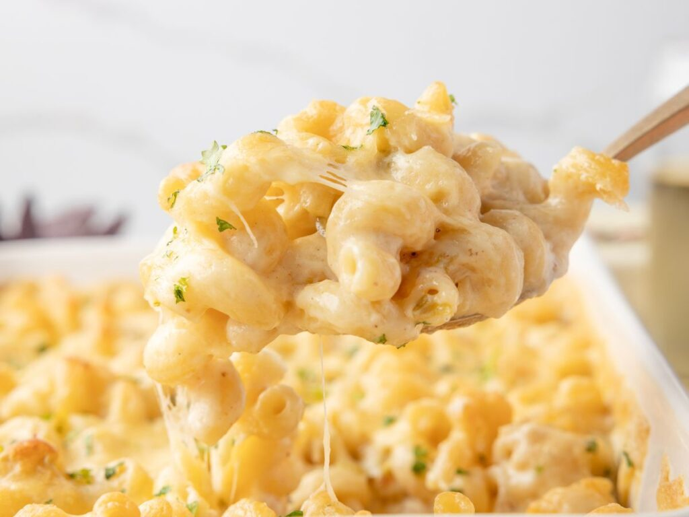

Homemade Mac & Cheese

Description
This is not your average boxed mac & cheese, this is as good as your grandma's secret recipe passed down through five generations
Ingredients
- 8 oz elbow macaroni
- 1/4 cup salted butter
- 3 cups milk
- 2 cups shredded cheddar cheese
- 1/2 cup grated parmesean cheese
Steps
- Preheat oven to 350 degrees and grease 8-inch baking dish
- Bring large pot of water to a boil. Add macaroni and cook for about 8 minutes, sitrring occasionally
- Once tender, drain macaroni and transfer into baking dish
- Melt butter in pan, then gradually whisk in 2.5 cups of milk
- Stir in cheddar and parmesean cheeses and season with salt and pepper
- Cook for 3-5 minutes until thick. Add extra milk if needed
- Pour cheese sauce over macaroni and stir well
- Bake in preheated oven for about 30 minutes
- Let cool for 10 minutes
- Enjoy!
Home